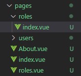
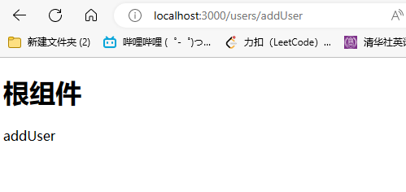
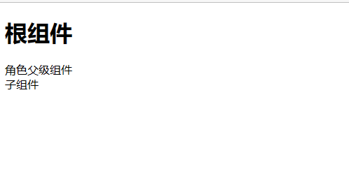
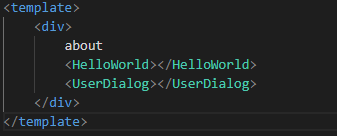
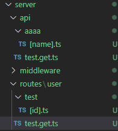

介绍
nuxt基础入门学习，个人觉得服务器端编写还得用nest.js
# nuxt学习
1.什么是模板渲染?
动态网站=不同数据+模板=>不同的html网页
2.在哪里进行渲染?
服务端渲染
客户端渲染
同构渲染
# 1.安装
nuxt/starter at v3 (github.com) (opens new window)
克隆上面仓库到本地就可以了
# 2.路由
Nuxt的一个核心特性是文件系统路由器。pages/ 目录中的每个Vue文件都会创建一个相应的URL(或路由)来显示文件的内容。通过对每个页面使用动态导入，Nuxt利用代码拆分为请求的路由提供最少数量的JavaScript。
Nuxt路由基于vue-router (opens new window)，根据文件名从pages/ (opens new window)目录中创建的每个组件生成路由。
这个文件系统路由使用命名约定来创建动态的嵌套路由:
创建一个pages文件夹，里面的vue文件都会被当做一个路由页面


- 默认路由组件：index.vue
- params传参：[id].vue
- 嵌套路由只需要vue文件名为父级组件，目录里的vue文件为子组件

roles父级组件
<template>
<div>
角色父级组件
<NuxtPage></NuxtPage>
</div>
</template>
<script setup lang="ts">
</script>
<style scoped>
</style>
子组件
<template>
<div>
子组件
</div>
</template>
<script setup>
</script>
<style lang="scss" scoped>
</style>
# NuxtLink
<template>
<div>
<h1>根组件</h1>
<NuxtLink to="/">首页</NuxtLink>
<NuxtLink to="/about">关于</NuxtLink>
<nuxt-link to="/roles">角色</nuxt-link>
<nuxt-link to="/users/addUser">用户</nuxt-link>
<!-- 相当于router-view -->
<NuxtPage></NuxtPage>
</div>
</template>
nuxtLink跳转不刷新页面，走的是客户端渲染，而普通的a标签会刷新页面，走的是浏览器端渲染
# 自定义路由
在项目根目录下新建一个文件夹app，然后编写文件router.options.ts
import {RouterConfig} from '@nuxt/schema'
export default <RouterConfig>{
routes:(_routes)=> [
..._routes,
{
path:'/error',
component:()=>import('../pages/users/addUser.vue')
}
],
}
# 路由中间件
middleware/ · Nuxt Directory Structure (opens new window)
# 3.组件
components/ · Nuxt Directory Structure (opens new window)
在根目录下的components组件会自动注册，不需要导入


注意：User目录下的要带上目录名，在global下的才是全局组件
# 4.布局layouts
layouts/ · Nuxt Directory Structure (opens new window)
如果只有一种布局使用app.vue结合NuxtPage就够用了
在根目录下新建文件夹layouts
然后在其下新建default.vue为默认布局

# 使用另一种布局
<template>
<NuxtLayout name="custom">
<div>
about
<HelloWorld></HelloWorld>
<UserDialog></UserDialog>
</div>
</NuxtLayout>
</template>
<script setup lang="ts">
definePageMeta({
layout:false
})
</script>
<style scoped></style>
# 动态更改布局
<template>
<div>
about
<HelloWorld></HelloWorld>
<UserDialog></UserDialog>
<button @click="changeLayout">改变布局</button>
</div>
</template>
<script setup lang="ts">
function changeLayout(){
setPageLayout('custom')
}
definePageMeta({
layout:'default'
})
</script>
<style scoped></style>
# 5.SEO配置
# 定义全局meta信息
// https://nuxt.com/docs/api/configuration/nuxt-config
export default defineNuxtConfig({
app:{
head:{
title:'红尘散仙',
meta:[
{
name:'keywords',
content:'nuxt 学习，前端'
},
{
name:'description',
content:'一个框架学习'
}
]
},
}
})
# 使用响应式数据定义元信息
使用useHead或者definePageMeta
<template>
<NuxtLayout>
<div>
<h1>根组件</h1>
<NuxtLink to="/">首页</NuxtLink>
<NuxtLink to="/about">关于</NuxtLink>
<nuxt-link to="/roles">角色</nuxt-link>
<nuxt-link to="/users/addUser">用户</nuxt-link>
<!-- 相当于router-view -->
<NuxtPage></NuxtPage>
</div>
</NuxtLayout>
</template>
<script setup lang="ts">
useHead({
title:'最爱熙熙',
meta:[
{
name:'author',
content:'yexiyue'
}
]
})
</script>
<style scoped>
a {
margin: 10px;
}
</style>
# 组件式定义
<template>
<Head>
<Title>6666</Title>
<Meta name="description" content="title"/>
</Head>
<div>
默认路由组件
</div>
</template>
# 动态标题
每个页面设置的标题会当作titlt传入
<script setup lang="ts">
useHead({
title:'最爱熙熙',
meta:[
{
name:'author',
content:'yexiyue'
}
],
titleTemplate(title) {
return `666 ${title}`
},
})
</script>
# 注意：
实际工作中，nuxt.config.ts和app.vue中只有一处设置head信息
//可以通过process.client判断是否在客户端
console.log(process.client)
# 6.获取数据
数据获取 · 开始使用Nuxt3 Nuxt中文站 (opens new window)
<template>
<div>
角色父级组件
<NuxtPage></NuxtPage>
</div>
</template>
<script setup lang="ts">
useFetch('https://api.uixsj.cn/hitokoto/get?type=social',{
method:'GET'
}).then(res=>console.log(res.data.value))
</script>
<style scoped>
</style>
# 7.服务器端接口
server/ · Nuxt Directory Structure (opens new window)
跟路由一样，进行约定式编写即可生成接口

export default defineEventHandler(event=>{
console.log(event.context.params)
return 'ok'
})
很多功能比如文件上传不知道怎么实现，建议使用传统后端框架，nuxt的后端服务做胶水层
# 8.状态管理
状态管理 · 开始使用Nuxt3 Nuxt中文站 (opens new window)
官方使用useState自己封装hooks来管理状态
使用pinia做为状态管理
安装依赖
pnpm add pinia @pinia/nuxt
新建stores文件夹
定义store
import {defineStore} from 'pinia'
export const useUserStore=defineStore('user',()=>{
const userInfo=reactive({
username:'张三',
age:18
})
return {
userInfo
}
})
配置自动导入和pinia
export default defineNuxtConfig({
/* ssr: false, */
modules:[
'@pinia/nuxt'
],
imports:{
dirs:[
'stores',
]
}
})
使用
<template>
<div>
角色父级组件
<NuxtPage></NuxtPage>
{{ store.userInfo.username }}
</div>
</template>
<script setup lang="ts">
useFetch('https://api.uixsj.cn/hitokoto/get?type=social',{
method:'GET'
}).then(res=>console.log(res.data.value))
const store=useUserStore()
</script>
<style scoped>
</style>
# 9.使用ui库
Vant Module · Nuxt (opens new window)
Element-plus Module · Nuxt (opens new window)
查看module文档即可